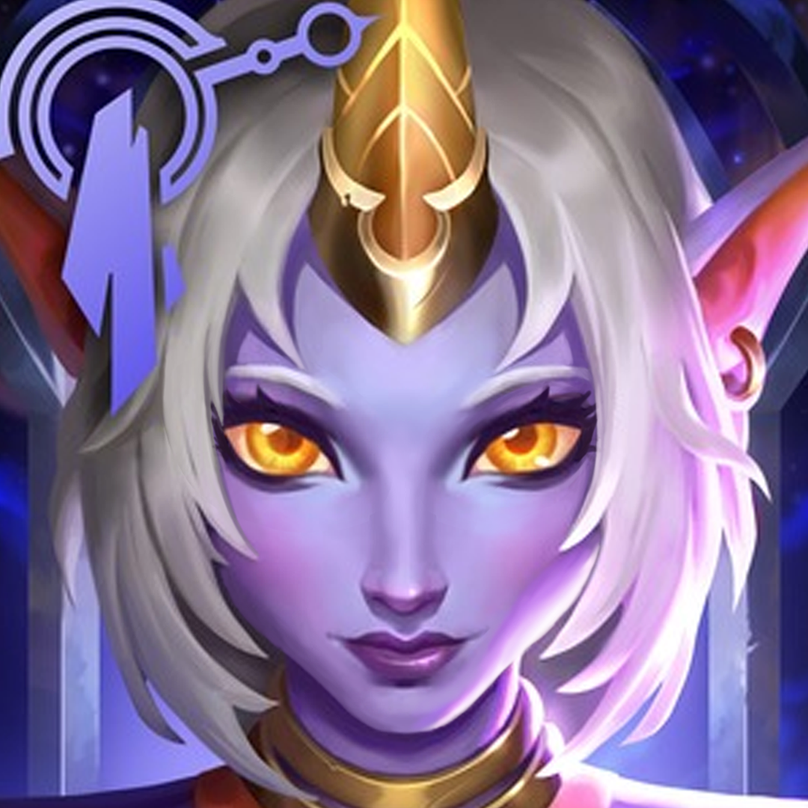

celestial-star child
A wanderer from the celestial realm beyond Mount Targon, Soraka gave up her immortality to protect the mortal races from their own more violent instincts. She endeavors to spread the virtues of compassion and mercy to everyone she meets—even healing those who would wish harm upon her. And, for all Soraka has seen of this world's struggles, she still believes the people of Runeterra have yet to reach their full potential.
work:celestial being, healer of mount targon.